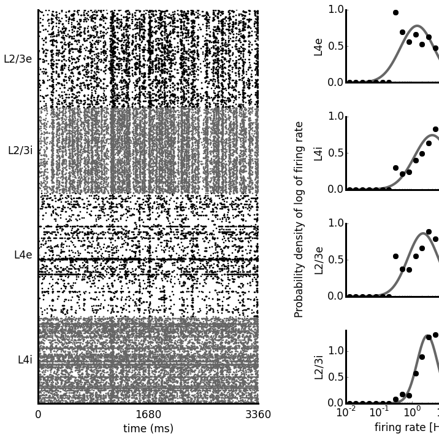
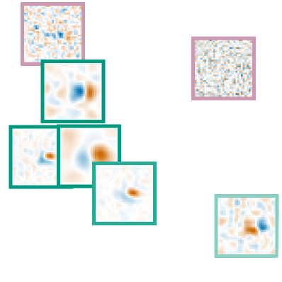

| Model of thalamo-cortical loop of cat visual system. |
|
This is the PhD project of Domenico Guarino.
What are the functional properties of the thalamo-cortical loop? In the early visual system of the cat, the feedforward pathway going from
the lateral geniculate nucleus (LGN) to the primary visual cortex (V1) is well characterized both anatomically and functionally. But, in
spite of the amount of experimental work, there is still poor agreement on possible roles for the feedback pathway going from V1 to
LGN. We addressed this issue dividing the available experimental data into open-loop conditions, where the thalamus was probed in isolation
from cortex, and closed-loop conditions, where the intact system was probed. We explored these same conditions with a biologically
plausible integrative large-scale model of the cat early visual system that includes: LGN, peri-geniculate nucleus (PGN), and V1.
|
| Comprehensive model of cat primary visual cortex. |
|  |
Neuroscience has produced an immense amount of data on the function and anatomy of early visual areas. However, the transformation of this knowledge
into a general coherent understanding has so far been limited. Computational modeling can integrate such fragmented data by building models of brain
structures that satisfy the broad range of constraints imposed by experiments, thus advancing our understanding of their computational role,
and their implementation in the neural substrate. In this project we aim to build a comprehensive multi-scale spiking model of cat primary visual
cortex which satisfies a unprecedented range of experimentally identified anatomical, statistical and functional properties. In future we will
expand the scope of the model beyond primary visual cortex.
|
| Mozaik: integrated workflow for neural simulations. |
 |
Computational neurosceince is shifting towards more heterogeneous models of neuronal circuits, and employment of complex experimental protocols.
This increase of complexity is not sufficiently addressed by existing tool chains. Mozaik is a
workflow system for spiking neuronal network simulations written in Python that integrates model, experiment and stimulation specification,
simulation execution, data storage, data analysis and visualization into a single automated workflow. This way Mozaik increases the productivity
of running virtual experiments on complex neuronal networks.
|
| Receptive fields identification in local populations of V1 neurons. |
|  |
One of the key goals of sensory neuroscience is to identify the relationship between stimuli and neural responses.
A common approch of identifying the stimulus-response function is to present a large collection
of stimuli while responses of sensory neurons are recorded. Numerous methods for estimating the stimulus-response function from such data has been
proposed in the past but no took advantage of the known architecture of primary visual cortex (V1) and the fact that a local population of
V1 neurons shares limited pool of thalamic inputs. In this project we investigate a novel method for estimating the stimulus-response function
in a population of neurons that implicitly assumes the discussed architecture of V1.
|